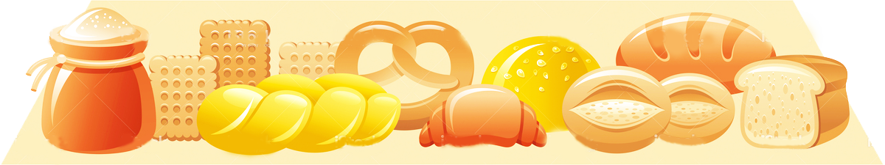

Fruits

Why are fruits important?
 Fruits provide fiber. They also provide many important vitamins and minerals and are low in calories. Fresh, local fruits and in season are best and can be very good value. Eat a variety of coloured fruit – green, yellow, orange, red and purple in order to benefit from the variety of vitamins and minerals provided by each colour group. Include a vitamin C rich fruit each day such as an orange or orange juice, strawberries or blackberries. Count fruit juice and smoothies as only one serving each day as they may be low in fibre. Fruits and fruit juices provide important amounts of vitamins A and C and potassium. They are low in fat and sodium.The Food Guide Pyramid suggests 2 to 4 servings of fruits a day.
Fruits provide fiber. They also provide many important vitamins and minerals and are low in calories. Fresh, local fruits and in season are best and can be very good value. Eat a variety of coloured fruit – green, yellow, orange, red and purple in order to benefit from the variety of vitamins and minerals provided by each colour group. Include a vitamin C rich fruit each day such as an orange or orange juice, strawberries or blackberries. Count fruit juice and smoothies as only one serving each day as they may be low in fibre. Fruits and fruit juices provide important amounts of vitamins A and C and potassium. They are low in fat and sodium.The Food Guide Pyramid suggests 2 to 4 servings of fruits a day.
The actual portion that you eat
may be bigger or smaller than the
servings listed in the Food Pyramid. For example, one plum
would count as ½ a serving.
What counts as a serving?
1 serving is:
- 1/2 cup of chopped,cooked, or canned fruit
- 1 medium apple, orange,
banana, pear or similar size fruit
- 2 small fruits - plums, kiwis or
similar size fruit
- 10-12 berries, grapes or cherries
- ½ a grapefruit
- 1 heaped dessertspoon of raisins
or sultanas
- 4 dessertspoons of cooked fresh
fruit, fruit tinned in own juice or
frozen fruit
- a small glass (100ml) of
unsweetened fruit juice or a
smoothie made only from fruit.
Here are some selection tips:
- Choose fresh fruits, fruit juices, and frozen, canned, or dried fruit. Pass up fruit canned or frozen in heavy syrups and sweetened fruit juices unless you have calories to spare.
- Eat whole fruits often—they are higher in fiber than fruit juices.
- Have citrus fruits, melons, and berries regularly. They are rich in vitamin C.
- Count only 100 percent fruit juice as fruit. Punches, ades, and most fruit “drinks” contain only a little juice and lots of added sugars. Grape and orange sodas don’t count as fruit juice.


**All age groups need at least 5 servings a day and more, if active.
Women who are pregnant or breastfeeding need 3 servings a day.





The Food Guide Pyramid ©
All rights reserved.
2016